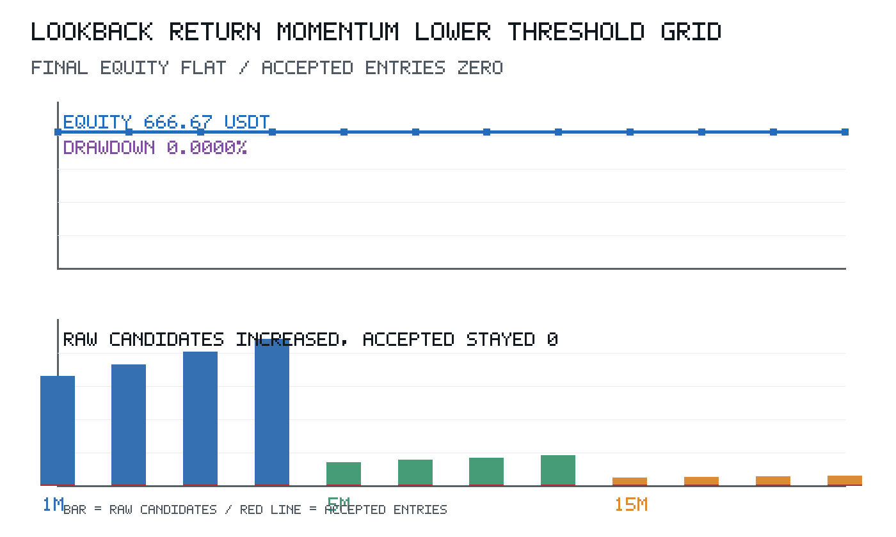
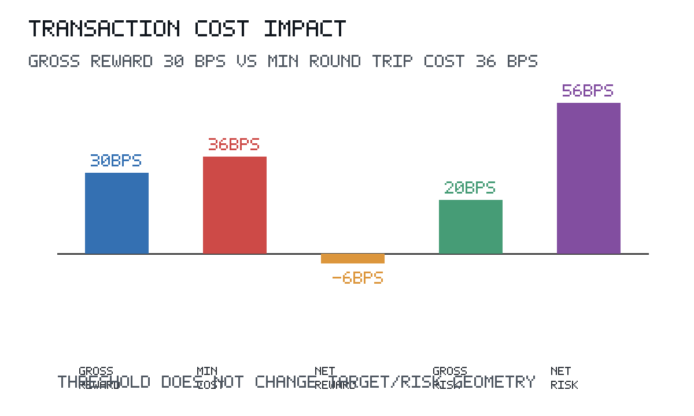
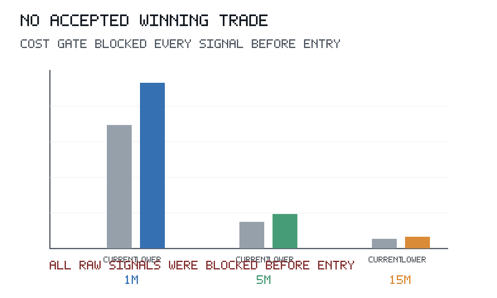
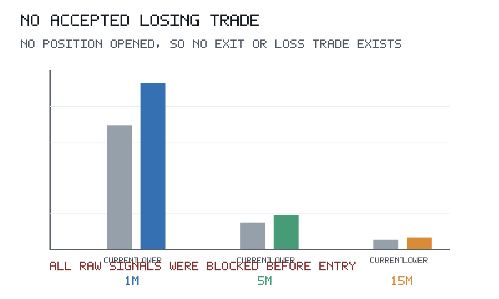

1. 핵심 요약
Lookback Return Momentum은 최근 N개 완료봉의 종가 수익률이 기준을 넘으면 같은 방향의 흐름이 다음 몇 개 봉에도 이어질 수 있다고 보는 전략입니다. 이번 비교에서는 진입 기준을 낮추자 raw 후보는 늘었지만, 비용 반영 보상/위험 조건을 통과한 진입은 한 건도 없었습니다.

핵심은 진입 기준 자체가 아니라 진입 이후의 손익 구조입니다. 현재 구조는 목표 이익이 30 bps이고 손절 위험이 20 bps인데, 최소 왕복 비용 추정치가 36 bps 이상입니다. 그래서 기준을 낮춰 후보를 늘려도 비용 반영 순보상은 음수로 남았습니다.
| 항목 | 내용 |
|---|---|
| 시장/심볼 | Binance BTCUSDT |
| 기간 | 2026-02-01 00:00 UTC ~ 2026-05-01 00:00 UTC 직전 |
| 타임프레임 | 1m, 5m, 15m |
| 비교 대상 | 현재 진입 기준과 20%, 40%, 60% 낮춘 기준 |
| 초기 자본 | 1,000,000 KRW, 666.6667 USDT 환산 |
| 포지션 사이징 | 거래당 사용 가능 현금의 10% |
| 비용 조건 | 수수료, 스프레드, 슬리피지 반영 |
| Timeframe | 현재 후보 | 가장 낮춘 기준 후보 | 후보 증가율 | Accepted entry |
|---|---|---|---|---|
| 1m | 79,981 | 107,492 | 34.40% | 0 |
| 5m | 17,171 | 22,097 | 28.69% | 0 |
| 15m | 5,937 | 7,449 | 25.47% | 0 |
2. 가설
- 진입 기준을 낮추면 최근 수익률이 기준을 넘는 raw momentum 후보 수가 늘어날 것이다.
- 후보 수 증가가 의미 있으려면 비용 반영 후 보상/위험 조건을 통과한 진입도 함께 늘어날 것이다.
3. 전략에 포함된 가정과 이론적 배경
이 전략은 최근 수익률이 단기 주문 흐름과 참여자 반응을 일부 요약한다고 봅니다. 가격이 모든 정보를 즉시 반영하지 않거나 추세 추종 참여가 이어지면 최근 움직임이 다음 몇 개 봉까지 지속될 수 있습니다.
다만 빠른 신호는 turnover를 늘립니다. 거래가 많아질수록 수수료, 스프레드, 슬리피지 부담도 커집니다. 따라서 방향이 일부 맞더라도 평균 후속 움직임이 비용과 손익비를 넘지 못하면 기대값은 낮아집니다.
- 우위가 생기려면 최근 방향성이 진입 후에도 충분히 이어져야 합니다.
- 성공 조건은 목표가까지 이어지는 움직임이 비용을 흡수할 만큼 커지는 것입니다.
- 실패 조건은 기준만 낮아져 작은 신호가 늘고, 보상/위험 구조는 그대로 남는 경우입니다.
E[R] = P(win) x AvgWin - P(loss) x AvgLoss - Cost4. 전략 규칙
지표는 최근 N개 완료봉의 close-to-close 수익률입니다. 수익률이 양수 기준 이상이면 Long 후보, 음수 기준 이하이면 Short 후보로 분류합니다.
momentum_return = close[t] / close[t - lookback_bars] - 1진입 후보가 생겨도 비용 반영 gate를 통과해야 실제 진입으로 이어집니다. 이 gate는 planned take-profit, stop-loss, 수수료, 스프레드, 슬리피지를 사용해 순보상과 순손익비를 계산합니다.
5. 백테스트 설정
| Timeframe | 비교 | Entry threshold | Raw candidates | 후보 증가율 | Accepted | Blocked |
|---|---|---|---|---|---|---|
| 1m | 현재 비교 기준 | 0.0010 | 79,981 | - | 0 | 79,981 |
| 1m | 20% 하향 | 0.0008 | 88,660 | 10.85% | 0 | 88,660 |
| 1m | 40% 하향 | 0.0006 | 97,860 | 22.35% | 0 | 97,860 |
| 1m | 60% 하향 | 0.0004 | 107,492 | 34.40% | 0 | 107,492 |
| 5m | 현재 비교 기준 | 0.0015 | 17,171 | - | 0 | 17,171 |
| 5m | 20% 하향 | 0.0012 | 18,723 | 9.04% | 0 | 18,723 |
| 5m | 40% 하향 | 0.0009 | 20,372 | 18.64% | 0 | 20,372 |
| 5m | 60% 하향 | 0.0006 | 22,097 | 28.69% | 0 | 22,097 |
| 15m | 현재 비교 기준 | 0.0020 | 5,937 | - | 0 | 5,937 |
| 15m | 20% 하향 | 0.0016 | 6,411 | 7.98% | 0 | 6,411 |
| 15m | 40% 하향 | 0.0012 | 6,899 | 16.20% | 0 | 6,899 |
| 15m | 60% 하향 | 0.0008 | 7,449 | 25.47% | 0 | 7,449 |
나머지 조건은 고정했습니다. Risk distance는 진입가의 0.2%, 손절은 1.0R, 익절은 1.5R입니다. 비용 반영 gate는 순보상 0 bps 이상, 순손익비 1.0 이상을 요구했습니다.
6. 결과
6.1 수익 곡선
모든 비교에서 accepted entry가 0이었습니다. 그래서 거래 실행, 청산, realized PnL, drawdown은 발생하지 않았습니다.
6.2 비교 결과
가장 낮춘 기준에서 raw 후보는 1m 107,492개, 5m 22,097개, 15m 7,449개까지 늘었습니다. 하지만 모든 후보가 같은 사유로 차단됐습니다.
| Timeframe | 가장 낮춘 기준 | Raw candidates | 현재 기준 대비 증가 | Accepted | 차단 사유 |
|---|---|---|---|---|---|
| 1m | 0.0004 | 107,492 | 34.40% | 0 | 비용 반영 손익비 불충족 |
| 5m | 0.0006 | 22,097 | 28.69% | 0 | 비용 반영 손익비 불충족 |
| 15m | 0.0008 | 7,449 | 25.47% | 0 | 비용 반영 손익비 불충족 |
6.3 거래비용 영향

실현 거래비용은 0 USDT입니다. 진입 전 gate에서 모두 차단되어 체결이 없었기 때문입니다. 더 중요한 값은 pre-entry 계산입니다. Gross reward 30 bps에서 최소 왕복 비용 36 bps를 빼면 순보상은 최대 -6 bps입니다.
6.4 청산 구성
청산은 발생하지 않았습니다. 진입이 없었기 때문에 손절, 익절, 시간 청산 비중도 계산할 수 없습니다.
7. 대표 거래
대표 수익 거래와 대표 손실 거래는 생기지 않았습니다. 모든 후보가 진입 전 비용 gate에서 멈췄기 때문에, 아래 이미지는 거래 사례 대신 후보가 어느 단계에서 차단됐는지를 보여줍니다.
대표 수익 거래

대표 손실 거래

8. 해석
이번 실험은 entry_threshold를 낮추면 no-entry 문제가 풀리는지 확인했습니다. 저장된 결과에서는 후보 수가 분명히 늘었습니다. 하지만 accepted entry는 12개 비교 모두에서 0이었습니다.
따라서 실패 원인은 진입 기준이 높아서 후보가 없었던 것이 아닙니다. 후보는 충분히 많았습니다. 문제는 fixed 0.2% risk distance와 1.5R target 구조가 비용 반영 후 순보상을 남기지 못한다는 점입니다.
entry_threshold 하향은 신호 빈도를 바꿉니다. 그러나 target, stop, cost gate는 그대로입니다. 그래서 같은 gate를 유지하는 한 후보 증가가 체결 증가로 이어지지 않았습니다.
보완점은 다음과 같습니다.
- Reward/risk geometry를 별도로 검토해야 합니다. 현재 gross reward 30 bps는 최소 왕복 비용 36 bps보다 작습니다.
- Risk distance와 take-profit multiple을 사전에 정의한 grid로 따로 검증해야 합니다. 이 값들이 바뀌어야 순보상 구조가 달라집니다.
- Timeframe별 비용 가정을 분리해 확인해야 합니다. 1m, 5m, 15m은 turnover와 평균 이동 폭이 다르기 때문입니다.
- 비용 gate를 완화하는 실험은 별도 목적의 gross-vs-net diagnostic으로 분리해야 합니다. gate를 끄거나 낮추면 실제 진입은 보이겠지만, 그것은 다른 질문입니다.